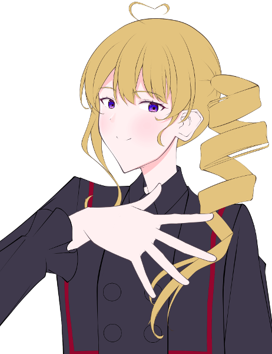

メインログ / 雑談ログ
キャラシート
父親： 巨肩矢委人 (キャラシート) PL：がぶらす母親： フランベルジュ (キャラシート) PL：雅
長男： ヴォルグ (キャラシート) PL：灸
長女： クリスタ=フォン=グラスマン (キャラシート) PL：ふろずん
次女： 雲峰詩音 (キャラシート) PL：めい
目次
■プリプレイHO&PC紹介
■オープニングフェイズ
01 本物の偽物
プリプレイ
■共通ハンドアウト
ワークス / カヴァー:自由 / 自由
ロイス:"パパラッチ"
推奨感情:P 自由 /N 自由
諜報専門の FH エージェント、通称 ” パパラッチ ”を UGN が取り逃がしたのが数週間前の話。
彼が逃げたと思われる薄雲市に潜入し”パパラッチ ” を見つける為、キミ達は敵にバレぬように家族を装って引っ越す事になる。
GM : では、始めに自己紹介から！まずお父さんどうぞ
巨肩 矢委人 : はーい！簡潔にということなのでできるだけ簡潔に

巨肩 矢委人 :
名前は巨肩矢委人(おおかたやすと)、年齢は17！
見た目は大人で中身は少年…だけど大人びてはいる子
よくチルドレンの教官と間違われるよ
でもやっぱり子供ではあるから、色々拙いところはある
カバーしてあげてほしいなって
巨肩 矢委人 :
ビルドについて
クライマックスに万色の檻で大殴りする殴りオルクス！
妖精の手もあるぜ
途中で武器が一個買えると嬉しいです
巨肩 矢委人 : 【ゆとシート】、【キャラクター登録所】
GM : 老けてるけど若いお父さん…調達についてはあとで1つ注意点がありますが全然できると思う！
GM : じゃあ次はお母さんどうぞ～
フランベルジュ : はーい！自分は更に簡潔に

フランベルジュ :
名はフランベルジュ、性は捨てた！
年齢は数百歳！Dロイス『古代種』の力でずっと幼い外見のまま生きてきました。一応UGN側で働いてるらしい。
フランベルジュ : 言動も幼いけど、どこか外見と不相応で物騒なことを口走ったりします。怖いね。
フランベルジュ :
そして現在はラウレスアレアという場所でお偉いさんやってます！詳しくはここを見てね！
https://lisp-trpg.sakura.ne.jp/upload/upl/_Mf7jA8rjFGw2SZWxZ7g/00499.html
フランベルジュ : シンドロームはピュアのソラリス。薬物の力で敵の精神を蝕み、デバフをかけるぞ！
フランベルジュ : 「そんなお母さんだよ！よろしくね！」
フランベルジュ : 【キャラクターシート】
GM : ありがとう！逆に見た目若いけど古代種でもうこの時点で雰囲気が危うい…
GM : 次は長男さん！
ヴォルグ : はーい

ヴォルグ :
名前はヴォルグ、年齢は32歳
雪女伝説のレネゲイドビーイングです！
元はFH寄りの情報屋、今は色々あってUGNに所属しています。
ヴォルグ : ぼんやりしているように見えて自分の損得で動き、好きな事をして好きな物を食べて生きてる。人生(?)楽しければなんでもよし！なタイプ
ヴォルグ :
シンドロームは氷特化のサラマンダーとブラム＝ストーカー
わざと攻撃を受けてカウンターをとったり自らの体力を削って戦うゾンビアタッカータイプです！
ヴォルグ : 【キャラクターシート】
GM : お兄ちゃん(32歳)おるね…お父さんがしっかりしてるけど未成年やから支えてあげてほしい…紹介ありがとう！
GM : じゃあ今度は長女さん！
クリスタ : よくってよ！
クリスタ : クリスタ=フォン=グラスマン！ 齢は15！
クリスタ : ドイツ出身の高校1年生の御嬢様ですわ！
クリスタ : 自身が貴族である事に誇りを持っていて、いつも自分磨きに余念がない女性ですの！
クリスタ : 特に"美"に関する意識の高さについては、トップモデルのソレと肩を並べるレベル！
クリスタ : それはそれはイロイロなコトを我慢して"美の頂点"への階段を昇っているのですッ！
クリスタ : ……そうした"努力"を続けてきた影響で、プライドの高いレディになっていますの！
クリスタ : また自他共に厳しいので孤高な人ですが、今回は疑似家族ができるということで！！ どういう関係になるのか愉しみですわ！！
クリスタ :
戦闘では「Dロイス：秘密兵器」等で取得したEXレネゲイド※を駆使して戦います！
※レネゲイドに感染した物品
クリスタ : RC技能で≪インビジブルハンド≫による範囲攻撃を行なう他、装甲諸々のおかげで合計43点のダメージ軽減ができますの！
クリスタ : 自分の身体は守って当然よね、だって手入れした肌が傷付くなんて許せないもの！！
クリスタ : ……そんなところですわ！
クリスタ : 【キャラクターシート】
GM : ああ、お嬢様！ご紹介ありがとうございます、一般家庭生活でのお嬢様の奮闘に期待していますわ…！
GM : 最後になりました、次女ちゃんどうぞ！
雲峰詩音 : はい！

雲峰詩音 : 雲峰詩音（くもみねしおん）、16歳のUGNチルドレンです。
雲峰詩音 : ≪急速分解≫で触れたものを灰に出来るけど、その代わりに常に周りが灰塗れになるところから、コードネームはシンデレラになりました。
雲峰詩音 : 対抗種のDロイスを持っているキャラで、オーヴァードは触れた箇所が火傷するような痛みを伴って灰化します。
雲峰詩音 : フレーバー設定だからHPダメージは無いけど、PCにも影響あるのでこのキャラに触る時には覚えといてもらえたらなって思います。一応服の上の部分ならギリ大丈夫です。
雲峰詩音 : 性格としては心に壁を作っていてあまり人と深く関わろうとしない暗い奴です。与えられた任務を成功させることだけ考えて生きてます。
雲峰詩音 : ビルドはモルフェウス/バロールのRC型で、≪砂の刃≫で灰を操って戦います。
雲峰詩音 : あとは≪孤独の魔眼≫で範囲攻撃の対象を自分一人に変更したり、≪時の棺≫で判定失敗にさせたりも出来ます。
雲峰詩音 : 以上で！
雲峰詩音 : 【キャラクターシート】
GM : 悲しい設定しとる…この卓通して人とちょっとずつでも触れ合っていってほしいね
GM : ではでは、今回はこの5人でやっていこうと思います。DX3rd『オーヴァード家族物語』始めていきます！
メインプレイ
シーン1 本物の偽物
GM : オープニングは全員登場です！
巨肩 矢委人 : 1d10＋29(1D10+29) ＞ 4[4]+29 ＞ 33
フランベルジュ : 1d10＋32(1D10+32) ＞ 7[7]+32 ＞ 39
ヴォルグ : 1d10+40(1D10+40) ＞ 7[7]+40 ＞ 47
クリスタ : 1d10+45 侵蝕率初期値でも一番ですわ～～～～(1D10+45) ＞ 10[10]+45 ＞ 55
雲峰詩音 : 1d10+33(1D10+33) ＞ 1[1]+33 ＞ 34
UGN支部 会議室
GM : とある夏の暑い日、君たちは本部エージェントである本分 英二(ほんぶ えいじ)に呼ばれ、UGN支部の会議室へと呼び出されていた。
GM : だが、君たちは任務のため呼び出しを受けたというだけでまだその内容は知らされておらず、その場には本分英二の影の形もない。
クリスタ : 「(……時間には可能な限りのヨユウをもって来たけれど、呼び出し人の姿はなし)」
クリスタ : 「(代わりに待ちあわせ場所にいたのは、矢鱈と背の高い男が一人、と)」
クリスタ : 「(……このワタクシをよびだしておいて失礼)」
クリスタ : 「(というか！ こんな背の高い日本人いますの！？ ソファが小さく見えますわよ！？)」優雅に紅茶を啜りながら、目の前の巨漢を観察する
ヴォルグ : クリスタの視線を感じつつ紅茶を飲んでいる、声を掛けようかとも思ったが今は他の面子を待った方がいいだろうと判断し、素知らぬフリをしている様子
ヴォルグ :
「（待たされるのは慣れてるが…気まずいな。）」
そっ…と視線を合わせないようにしながら
巨肩 矢委人 : ふと、規則正しいノックの音がする
クリスタ : 「……？ 本分様の御到着かしら？」チラ、と扉に目をやる
ヴォルグ : 心なしかホッとした様子で扉を見る
巨肩 矢委人 :
「失礼致します」
身長にして約180cmという長身のスーツの男が入って来る
クリスタ : ガシャン、とそこそこ大きな音を立ててティーカップを置く
クリスタ : 「(また巨体のオジサマ！？！？)」
ヴォルグ :
「！」
僅かに目を丸くして大きな音を立てたティーカップとクリスタを交互に見る
巨肩 矢委人 : 「！？…ええと、どうかしましたか？」
クリスタ : 「……いえ、なんでも」平静を装う
クリスタ : 「あなたは……本分様から言伝でも預かってきたのかしら……？」呼びだされたのは自分だけだと思っているので、遣いのエージェントだと勘違いしている
巨肩 矢委人 : 「？ ええと、失礼致しました。UGNチルドレン、"オーリーオーン"巨肩矢委人、到着致しました。自分は本部からの伝言は託かってはいませんが…」
クリスタ : 「UGNチルドレン？」
クリスタ : 「(……ああ、いえ、聞き間違いよね、聞き間違いだわ)」
クリスタ : 「それでは、あなたはどうして此処に？」
巨肩 矢委人 : 「はい、自分はエージェント・本分に召集を受けました」
クリスタ : 「……あなたも、本分様から召集を？」
クリスタ : 「では、あなたも？」ヴォルグ君に視線を移し
ヴォルグ : 「俺もエージェント・本分から召集を受けた。人数以外の内容は聞いていないがな…」
クリスタ : 「…………」
クリスタ : クリスタはごくごくごくと紅茶を一気に飲み干して、叩きつけるようにカップを置きます。
クリスタ : 「(どういう人選なの！？！？！？！？)」
クリスタ : 「(この麗しいワタクシと、あの巨漢二人がバディってコト！？！？！？！？！？)」
巨肩 矢委人 :
「(何か言いそうだけど何も言わないな…)」
固唾を呑んで見守っている
ヴォルグ :
「…ということはあと２人だな。」
落ち着きのない様子を暫く眺め、軽く咳払いをして漸く口を開いたかと思えば手帳を確認しながら呟く
クリスタ : 「あと二人！？ まだいるの！？」思わず声を出す。 巨漢が更に二人まとめて出てくる様子をイメージしているらしい。
巨肩 矢委人 : 「…？人数は私含めて5名という連絡は受けていたような…詳細は伝達されていませんが…」
クリスタ : 「……ワタクシのところに、そのような連絡はありませんでしたわ」
巨肩 矢委人 :
「んん…！何か考えが…」
苦しいフォロー
ヴォルグ :
「（伝達ミスか…？）」
手帳の伝達内容にも軽く不信感を抱きつつ
雲峰詩音 :
三人がそうしていると、部屋の片隅に異変が起きる。
縦横2m程度の空間が灰色に染まり、砂のようにサラサラと崩れて穴が空いたのだ。
ぽっかりと空いたその穴の中から、一人の少女が姿を現す。
雲峰詩音 :
「……失礼します」
≪ディメンジョンゲート≫を使い、空間を超えて部屋の中に入って来る。
クリスタ : 「……！」
クリスタ : 「(いきなり出てきて吃驚しましたが、女性です…！ 女性ですわ…！！)」一瞬だけ驚くが、すぐに胸を撫でおろす
雲峰詩音 : 「えっと……」 部屋の中を見渡して、本分がいないことを確認
雲峰詩音 : 「わたしは、任務に呼ばれて来たのだけど……」
巨肩 矢委人 : 「エージェント本分から招集を受けた方ですか？」
雲峰詩音 : 「はい……」 頷く
クリスタ : 「(しかし陰気な方ですわね……、しかも怪我人じゃありませんの……、本分様は本当に何を考えてらっしゃるのかしら……)」
巨肩 矢委人 : 「でしたら…まだご本人が到着していないようですので、おそらく待機になるかと思われます」
雲峰詩音 : 「そうなんですね……分かりました」
ヴォルグ :
後からきた２人を見ながら席を立ち、ソファを指し示しながら
「その場で待つわけにもいかないだろ、紅茶でも飲むか？」
雲峰詩音 :
「あ……えっと、はい。じゃあ、お願いします」
ソファの方に移動する。その場から離れると空間に空いた穴は自動的に元に戻った。
巨肩 矢委人 :
「あぁ、ありがとうございます。では自分も失礼して…」
自分もソファへ移動しよう
フランベルジュ : そんな和やかな雰囲気に水を差すように、扉の向こうから『パタパタ』『ガラガラ』と騒がしい音が聞こえる。
フランベルジュ : その騒音は扉の前で止まり、扉が開かれた。
フランベルジュ :
「おーまーたーせー！わっ、もうみんな揃ってる！」
大きなスーツケースを引いて、元気よく部屋の中へ入る。
雲峰詩音 : 「……！？え……」 肩を小さく震わせてそちらを見る
巨肩 矢委人 :
「おお…」
すごい方が来たなぁという反応
ヴォルグ :
スーツケースとお土産袋を抱える少女を見て
「…観光でもしてきた？」
フランベルジュ : 「そうなの！久しぶりの日本だから、行きたい所がたくさんあって……」
巨肩 矢委人 :
「ん？ええと、今からここは会議で使用するんですが…」
間違えて来た説を思い浮かべる
フランベルジュ :
「あっ、紅茶飲んでる！丁度お土産でクッキーを買って来たの、一緒にどうぞ！」
ぱぱっと缶に入ったクッキーを取り出して
雲峰詩音 : 「いえ、あの……あなたは……？任務で来たエージェント……のようには見えない、ような……」
フランベルジュ : 「あ～、迷い込んだ子供って思ってるでしょ～？私はちゃーんと本分くんに呼び出されてきてるのよっ」
クリスタ : 「(巨漢……、少女……、女児……)」
クリスタ : 「……これは、悪い夢、かしら」
雲峰詩音 : 「えっ……そ、そうなの」
ヴォルグ :
はいはいと慣れた様子で追加の紅茶を並べながら
「オーヴァードには良くあることだ。」
巨肩 矢委人 : 「なる、ほど……？(この間習った古代種か…？あるいは純粋に年齢が低いだけなのか…)」
フランベルジュ :
「そうそう、それと自己紹介ね！」
「私の名はフランベルジュ！コードネームは"ドレッドフル"、いつもはラウレスアレアってところでお仕事してるの。遊びに来る時は連絡を頂戴！」
ふんすっ、と胸を張って自己紹介
クリスタ : 「ラウレスアレア…！？ 本当にあんなところで仕事をしているっていうの…？」
巨肩 矢委人 : 「丁寧にありがとうございます。申し訳ありませんが、ラウレスアレアというのは…？」
ヴォルグ : 「そりゃまた遠方から…」
ヴォルグ : 矢委人にラウレスアレアの簡単な説明をします。
クリスタ : 「……軽い説明でも十二分に理解できたと思うけれど、遊びに行くのは冗談のつもりでも止めた方がいい場所よ」
巨肩 矢委人 : 「ええ、自分が行ったところで何がどうなるような場所ではなさそうですね…そこで仕事をしていらっしゃると言うことは、相当なキャリアを積んで…？」
雲峰詩音 : 「でも幼く見えるけれど、UGNチルドレンなの……？」
フランベルジュ :
「私の庇護下なら大丈夫。手を出す人がいたら…それは命知らずさんね？」
「ううん。UGNエージェントよ？これで数百年は生きてるんだからっ♪」
再びエヘンッと胸を張って
フランベルジュ : 「あっ、キャリアらしいキャリアは調べても出てこないと思うよ。そういう役職なの、私」
雲峰詩音 : 「数百年……もしかして、古代種のオーヴァードかしら……」 小声で呟く
巨肩 矢委人 : 「数百…となると、古代種と呼ばれるレネゲイドを有しているんですね。なるほど…いえ、納得しました。……これで全員が揃いましたか」
ヴォルグ :
「揃ったみたいだな…伝達ミスがなければ。」
部屋にいる人数を軽く数える
クリスタ : 「これで全員？ そうかしら？」
クリスタ : 「……最重要人物がひとり遅れているようだけれど」
フランベルジュ :
「ああ～、本分くんがいなーい！」
部屋をぐるりと見回して
GM : と、そこで廊下の方から近づいてくる足音がする。

本分 英二 : 「どうもどうも、遅れてすみません」
本分 英二 : 扉を開けてバタバタと入ってくる一人の男。瓶底メガネにヨレヨレの白衣、本分英二その人だ。
クリスタ : 「……あら、ウワサをすれば」
クリスタ : 「随分と重役出勤でしたわねぇ、本分様？」キッと刺すような視線を飛ばす
フランベルジュ :
「やっほー、本分くん。道端でお婆ちゃんでも手助けしてたのかな？」
笑顔で出迎える
本分 英二 :
「いやぁ、それがここに来る途中で犬の尻尾を踏んで怒らせてしまいまして！運が悪いこともありますよね」
ヘラッと笑ってみせる
クリスタ : 「犬の尻尾……ねぇ……」
雲峰詩音 : 「それは……よく分かりませんけど、わたし達も今さっき揃ったところなので、気にしないでください」
クリスタ : 「いえ！ いいえ！ 気にしてもらわないと困ります！」
クリスタ : 「ワタクシの一分一秒は貴重なのですから！」
雲峰詩音 : 「そうなの……？でもあなたの時間の価値なんてよく分からないわ、ごめんなさい」
クリスタ : 「………………」
クリスタ : 「──ああ、そう。 もういいわ、怒る気も失せた」
フランベルジュ :
「あははっ！そうだよね。人の価値感なんてそう簡単にわからないよね！」
ケラケラと笑いを零して
巨肩 矢委人 : 「(この方々と作戦行動か…彼女らもプロだ、流石に真面目にやってくれるだろうけど…頭が痛いな…)」
ヴォルグ :
"あーあ…"と言いたげな顔で少女達を見る
「…流石に任務の用件は忘れていないよな？」
ヴォルグ : こじれる前に話を逸らしてしまおうと説明を促す
クリスタ : 「……そうね、この取り留めのないメンバーが集められた事情等について説明を」
本分 英二 : 「はい！今回皆さんには任務の依頼があって集まっていただきました」
本分 英二 : 「このメンバーが集められたのには深い深ーい訳があるんです。早速任務の詳細からお話させていただきましょうか」コホンと咳払いを1つする
雲峰詩音 : 「お願いします」
本分 英二 : 「えー……まず、この日本に“パパラッチ”というコードネームのFHエージェントがいまして」
本分 英二 : 「そのパパラッチがUGNから機密情報を盗み逃走。それを取り逃がしたのがつい先日のことです」
雲峰詩音 : 「……じゃあ、わたし達はそのFHエージェントを倒して情報を奪い返せばいいのでしょうか……」
本分 英二 : 「その通りです！いやぁ、理解が早くて助かります」
フランベルジュ : 「ふーん、なんだか普通の任務だね。やっぱり殺しておいた方がいいの？」
巨肩 矢委人 :
「普通の任務……先ほど人選に深い理由が、と仰られていたので、少し勝手が違うのでしょうか？」
と先を促そう
ヴォルグ : 「わざわざ外部からも召集を掛けたんだ、思ったより簡単じゃなさそうだな…？」
雲峰詩音 : 「……やむを得ない場合はそうなるかもしれないけど、基本的には確保した方が良いと思うわ……ドレッドフル」 話を妨げないように、フランベルジュに小声で言う
フランベルジュ :
「そっか、優しいね！」
ひそひそ
雲峰詩音 : 「優しいとか、そういうのじゃないと思うけど……」
本分 英二 :
「そうなんです。重要なのはここから先でして～…」
巨肩君、ヴォルグくんに答えて
本分 英二 : 「そのパパラッチですが、薄雲市に所属するとある団地に逃げ込んだ可能性が高いことが分かってます！」
雲峰詩音 : 「居場所の見当はついているんですね……それなら話が早そう」
ヴォルグ :
「薄雲市か…」
FHの考える逃げ場らしいなと頷く
本分 英二 : 「それが簡単に行かない理由があるんです！」ヴォルグさんはご存知ですかね、と続けつつ
本分 英二 : 「まず、何故パパラッチがその団地に潜んでいる可能性が高いかという根拠からお話しますが…」
クリスタ : 「続けて？」
本分 英二 : 「えー…パパラッチには そのですね、特殊な癖がありー……」
本分 英二 : 「所謂下着泥棒としても知られている変態です」
巨肩 矢委人 :
「………はぁ」
呆れたというか驚いたというか…の顔をする
フランベルジュ : 「変態さんだーっ！」
雲峰詩音 : 「…………」
ヴォルグ : どう反応すべきか困った顔をしている
クリスタ : 「……それで？」軽蔑の表情を隠さず
本分 英二 : 「はい、パパラッチの逃げたと思われる方角と、最近下着泥棒が発生しているという情報からパパラッチはその団地を根城にしている可能性が高いと判断された、というわけです！」
巨肩 矢委人 : 「(アホ…？)」
本分 英二 : 「そこでー……」
本分 英二 : 「君たちには一般人にもパパラッチにも怪しまれないよう、目立たぬように団地に一週間『家族として』潜入任務をしてもらうことになりました！」
本分 英二 : いかにも名案といった風な顔をしながらとんでもないことを口走る本分。
クリスタ : 「ああ、なるほどそれで」
クリスタ : 「────はあ！？！？！？！？！？！？」
巨肩 矢委人 : 「…はぁ？」
フランベルジュ :
「わあ、家族！」
キラキラと笑顔を浮かべて
ヴォルグ :
「……ん？」
唐突な任務の内容に疑問符を浮かべて固まる
雲峰詩音 : 「…………か、ぞく？」 スカートの裾から、サラ……と灰が零れる
本分 英二 : 「はい！皆さんには家族のふりをして件の団地に潜入していただきます。もちろん周囲にはバレないように」
クリスタ : 「そんなの言いなおさなくても分かってるわよッ……！！」
巨肩 矢委人 : 「そのう、何が何だか…」
雲峰詩音 : 「家族……」 体の周りに灰が漂い始める
ヴォルグ : 「人選はこれで合ってるのか…？」
フランベルジュ :
「わあ、とっても素敵ね！それでこの5人が……」
改めてみんなをじっくりと見回して
巨肩 矢委人 : 「まぁ、そうですね…この中に変身能力をお持ちの方が…？自分はそういったものはさっぱりなんですが…」
本分 英二 : 「ええ。皆さんになら素敵な家族を演じていただけると思ってお呼びした次第です、はい！」
クリスタ : 「……ふざけているのかしら？ 本部エージェントの判断とは俄かには信じられないのですけど」
ヴォルグ : 「本人は至って真面目の様だが…」
巨肩 矢委人 : 「話が…見えてきませんね…」
巨肩 矢委人 : 「いや、もうすでに全容が見えている…？」
フランベルジュ :
「私は賛成だよっ！"ファミリー"じゃない家族を作るのとっても楽しみ！」
機嫌よく足をぱたぱたさせて
雲峰詩音 : 「……あの、別に団地に潜入しなくても、薄雲市のUGN支部を拠点にして調査を進めればいいんじゃないでしょうか……？」
本分 英二 : 「雲峰さんの意見は最もだと思います！ですが、それがそうもいかない事情がありまして……」うんうんと頷きながら
クリスタ : 「……事情？」怪訝な顔で
雲峰詩音 : 「……？」 首を傾げる
本分 英二 : 「単刀直入に言いますと、存在しないんですねーUGN支部が。向こうの警察とUGNとの間に軋轢がありまして…このような事件に発展していてもこちらからの介入が難しいんです」
雲峰詩音 : 「あぁ、なるほど……」
雲峰詩音 : 「……じゃあ、分かりました。その……家族、の設定で潜入します」
クリスタ : 「少しはマトモな事を言うかと思ったら、アナタまで何を言い出しますの！？！？」
雲峰詩音 : 「だって……そうするしかないなら仕方ないわ。それに、本部のエージェントの判断なら不可能ではないということだと思うから」
ヴォルグ :
「それで、仮住居は手配してあるのか？それぞれ役割は？」
あっさりと受け入れた様子で
巨肩 矢委人 :
「ええ…？こういった任務ってよくあるものなんですか…？」
あまりにも素直に聞き入れる人が多い！
ヴォルグ :
「さぁ…？俺は初めてだが、なかなか楽しそうじゃないか？」
肩を竦めてみせる
フランベルジュ :
「うんうん。たまにはこういう任務も良いんじゃないかなっ♪」
賛成派の人達に頷く
本分 英二 : 「部屋は手配済みです！どういう家族設定で行くかは皆さんで話し合ってください」
クリスタ : 「話し合う！？ それ以前の問題でしょう！！」ダン、と机を叩いて立ちあがる
クリスタ : 「この任務に乗り気なアナタ達！ 今一度、此処に集められたメンバーを御覧になって！？」
巨肩 矢委人 :
「(すごい勢いだ…)と、言いますと…」
周囲を見回してみる
雲峰詩音 : 「……確かに、家族で通すには難しそうな気もするけれど」
雲峰詩音 : 「嫌ならやめればいいと思うわ。嫌々手伝われて足を引っ張られても困るし、あなた一人位ならいなくても多分問題ないと思うから」
クリスタ : 「(この女～～～～～～！！！！！！)」
クリスタ : 「……はぁ、よくよく聞いてくださるおばかさん？」息をはいて怒りを鎮め
クリスタ : 「あのね、ワタクシは感情的な忌避感などでそう言っている訳じゃないの」
雲峰詩音 : 「そうなの」
クリスタ : 「そうなの」
クリスタ : 「だって、それ以上に大きな問題がひとつあるでしょう？」
雲峰詩音 : 「……？」
クリスタ : 「それはね」
クリスタ : 「あまりにもワタクシが美しすぎる！！！！！！」
クリスタ : 「という深刻な……」
巨肩 矢委人 : 「ん…？」
雲峰詩音 : 「……どういう意味？何を言ってるのかよく分からないわ」
フランベルジュ :
「顔はとっても綺麗だよね～、私も負けてないと思うけど！」
《麗しの容貌》のぷにぷにフェイス
ヴォルグ :
話半分に聞き流しながら
「…母親役は無理そうだな、とはいえ後のふたりも若すぎるか。」
巨肩 矢委人 : 「その…容姿が美しい…という点では…否定は決してしませんが、それとこれとにどういった問題が…？」
クリスタ : 「……おばかさんは分からなかったようですから、嚙んで含めるように丁寧に教えてさしあげましょう」
クリスタ : 「ワタクシ、優しいので」
クリスタ : 「──あのね？ ワタクシが美しすぎるせいで、アナタたちと血が繋がっているなんてムリがありすぎるでしょう？ 人種だって違うわ？」
雲峰詩音 : 「……あぁ、そういうこと」
巨肩 矢委人 : 「人種という点でなら、確かに。髪色は染めているという言い訳が効くと思いますが…」
雲峰詩音 : 「じゃあ、やっぱりあなたはやめた方が良いと思うわ。そうすれば何とかなるってことなのよね？」
巨肩 矢委人 : 「いえ、それは…あくまで我々5人を作戦に召集した以上、我々判断での離脱は選択肢として無いのではないでしょうか」
雲峰詩音 : 「……駄目か。じゃあ、どうすればいいんだろう……」
巨肩 矢委人 :
「と、言うような問題があるのですが…エージェント・本分、問題無いのですか？」
本分さん見よう
ヴォルグ :
「？」
（あまり違いが分からない…）と言いたげな顔で一同の顔を眺めている
本分 英二 : 「人種についてはハーフという設定でいかがでしょう！僕も1人だけ海外の方だと不自然だと思ってたんです。でも、フランベルジュさんとかヴォルグさんとかもいますし」屈託のない笑顔で笑ってみせて
本分 英二 : 「それにほら！クリスタさん、目の色だって雲峰さんとよく似ていますし並んだら姉妹に見えてきませんか？」うん、見える見える！と一人納得したように頷いている。
巨肩 矢委人 :
「ハ、ハーフ…！確かに通らない理屈ではありませんが…！………そう、ですね……本部エージェントである本分さんがそう仰る以上、その作戦で問題は無いの……でしょうか…」
自信なさげ
ヴォルグ :
「美人…？がどう影響するかは分からないが、それなら母親役か父親役どちらかに海外の人種を配属すべきだろうな。」
エージェント・本分の言葉に頷きながら
巨肩 矢委人 :
「ええ、そうですね。母親役を希望される方はいらっしゃいますか？」
既に作戦に取り込まれている
フランベルジュ :
「はーい！はいはーい！私っ！」
ピョンッ！と腕を伸ばす
クリスタ : 「…………」母親役をしようという童女を見て
クリスタ : 「紅茶、御馳走様」
クリスタ : 「これから私はマッサージに……」ふらりと疲れたように出口に向かう
雲峰詩音 : 「分かった、それじゃ……」 見送る構え
フランベルジュ :
「わーっ！待って待って！」
出口に先回り
ヴォルグ :
「……」
困ったように口元に手を当てて考えている
クリスタ : 「はあ……あのねえ……」
クリスタ : 「……まずは本分様が言った『ワタクシとその女の瞳が同じ色』という話だけど」
クリスタ : 「深紫と薄藤を、同じ"紫"で括らないでもらえるかしら」
クリスタ : 「何より似ても似つかないわ」
雲峰詩音 : 「あなたの方が美人だから？」
クリスタ : 「その通りよ、少しは……」
雲峰詩音 : 「じゃあ、不細工に見えるように変装するのはどう……？」
クリスタ : 「いいえ、やはりバカでしたわ、この子……」
雲峰詩音 : 「良いと思ったんだけど……駄目か……」
クリスタ : 「宝石を泥水で覆うほどの愚行ですわ」
クリスタ : 「──それと、そこの子供が母親になるという話」
クリスタ : 「古代種だかなんだか知らないけれど、もう意味が分かりませんわ」
フランベルジュ :
「ふふ、そうだよね。よくも知らない相手と家族になれ。だなんてちょっと無理があったよね。」
首をかしげてニコニコ
クリスタ : 「いえ、ワタクシは"ハロー効果"でも言われている通り、人間は見た目が90％だという話を……」
ヴォルグ : 「容姿に関しては俺から見ると違いがよく分からない。」
ヴォルグ :
「一旦、自己紹介でもして見極めるか？」
名前も年齢も知らないだろう、と提案してみる
フランベルジュ : 「そうっ！まずはお互いをよく知るところから始めましょう？思い返してみれば、私しか名乗ってないし！」
フランベルジュ :
「ね、だからもう少しお話していかない？お顔の良い人？」
クリスタ嬢を見上げるようにニッコリと微笑んで
クリスタ : 「……はあ」
クリスタ : 「仕方ないですわね、もう少しだけワタクシの時間を恵んでさしあげましょう」再びソファに座り
フランベルジュ : 「ありがとう！優しい人だって信じてたわ！」
ヴォルグ :
「…どうも。じゃあまずは俺からだな」
ソファに座った姿を見て穏やかに礼を言うと自己紹介を始める
ヴォルグ : 「コードネームは“フェンリル”、名前はヴォルグだ。言い忘れていたがレネゲイドビーイングでな…"家族"というものは役割以外よく分かっていない。」
クリスタ : 「レネゲイドビーイングね、それを聞いて腑に落ちたわ」
クリスタ : 「……だって、明らかに日本人の体格じゃありませんもの」
雲峰詩音 : 「何センチあるの？」
ヴォルグ : 「最後に測った時は確か…210…？だったな」
雲峰詩音 : 「大きい……」
巨肩 矢委人 : 「210cm…規格外ですね…なるほど、レネゲイドビーイング…」
フランベルジュ : 「おっきい狼さんね…。うん、それじゃヴォルグくんもよろしくね！」
ヴォルグ :
「ああ、宜しく」
次は誰が紹介する？と順番に眺めて
フランベルジュ :
「それじゃあ改めて私から！」
コホン、と軽く咳払い
フランベルジュ : 「コードネームは"ドレッドフル"、名前はフランベルジュ！数百年前に古代種に感染しちゃってからずっとこの見た目なの、わあ大変。」
フランベルジュ : 「今回はラウレスアレアから緊急来日！みんなと仲良くできれば良いな！」
雲峰詩音 : 「さっきも少し聞いたけど、本当に古代種なの……？年齢的には母親でもいける……の、かしら……」
フランベルジュ : 「任せてっ、人をまとめる役割には慣れているの！家族は初めてだけどね？」
巨肩 矢委人 : 「よろしくお願いします。あくまで"年齢的には"では…ですね。それでも離れすぎてはいますが…」
クリスタ : 「……この際ですから、ひとつ気になっていたコトを尋ねてもよろしいかしら？」
フランベルジュ : 「よろしくてよ！」
クリスタ : 「あなた、ラウレスアレアから来たと言っているけれど出身は別でしょう？」
クリスタ : 「一見して下品にも見える振る舞いの節々に垣間見える、その育ちのよさ」
クリスタ : 「──何処の"家"の出？」
フランベルジュ :
「わあ、そんなこと聞いて来る人ホントに久しぶり！」
両手で頬を押さえ、オーバーなリアクションを見せる
フランベルジュ : 「そう、私も昔は貴族だったの。でも覚醒したら気味悪がられて絶縁されちゃった！あははは！」
クリスタ : 「……そう」
クリスタ : 「それは失礼な事を聞いたわね、スナオに非礼を詫びるわ」
雲峰詩音 : 「え……」 詫びている様子を見て少し驚く
フランベルジュ :
「ううん。気にしないで？私の事を知ろうとしてくれて、とっても嬉しいわ！」
「こそこそ調べようとしてくるのは別だけど（小声）」
フランベルジュ : 「それじゃあ、貴女のことを教えて？一番目立っていたから早く知りたいの！」
クリスタ : 「ええ、いいでしょう」失礼な視線を投げている女が約一名いますわね、と内心おもいつつ
クリスタ : 「ワタクシの名は、クリスタ=フォン=グラスマン！」
クリスタ : 「ドイツの名家、グラスマン家の正統なる血統を引く"貴族"ですわッ！！」
雲峰詩音 : 「お嬢様なのね……」
クリスタ : 「ええ、だから高貴なるワタクシの時間は貴重なのです」
クリスタ : 「せいぜい言葉を交わしてもらえる事に感謝なさい？」
雲峰詩音 : 「それはあんまり分からない」
クリスタ : 「この子はまたッ……！！」
ヴォルグ :
「まぁまぁ」
続けて、と言いながら
フランベルジュ :
「よろしくね！貴族仲間だね！」
きゃっきゃ
クリスタ : 「現役貴族であるワタクシとアナタは仲間では……」
クリスタ : 「というか、よろしくってなんですの！？ よろしくって！？」
クリスタ : 「ワタクシ、まだ疑似家族になるつもりはありませんわよ！？！？」
巨肩 矢委人 : 「その判断をするために自己紹介をする、という話でしたね。次は自分でよろしいですか？」
雲峰詩音 : 「あとは……わたしもまだか……。大丈夫です」
巨肩 矢委人 :
「では自分が。挨拶が遅れて申し訳ありません、コードネーム”オーリーオーン”、巨肩矢委人と申します。現在はUGNチルドレンに在籍しています」
行儀よく、お辞儀をするでしょう
雲峰詩音 : 「…………？？？」
雲峰詩音 : 「あ……UGNチルドレンの、教官……ってこと？ですよね……」
ヴォルグ : 「チルドレン…ということは、幾つだ…？」
巨肩 矢委人 :
「はい、数えて17、教官に間違われた回数は…最初は友人間で共有して楽しんでいましたが、もう数えていません」
苦笑い
クリスタ : 「はあ！？！？！？！？！？ 17！？！？！？！？」
フランベルジュ : 「すごーい、もう成人してるのかと思っちゃった！ある意味で私と逆だね！」
雲峰詩音 : 「み……見えない……」
巨肩 矢委人 : 「そうですね…一応、変異種のレネゲイドを有していますから、その影響かと検査したんですが……ただの体質、もとい特徴でした」
ヴォルグ : 「ふむ、同世代だと思っていたが…かなり若年層が固まっているな…」
クリスタ : 「……ねぇ、悪い魔女に老化魔法でもかけられたんじゃないの？」
巨肩 矢委人 : 「いえ、生まれて一度も悪い魔女にお会いしたことはないですね…遠隔から干渉されているならまだしも…」
クリスタ : 「そう……同情するわ……可哀想ね、あなた……」
雲峰詩音 : 「そうかしら……。驚いたけど、老化してるわけじゃないなら可哀想ではないと思うけれど」
巨肩 矢委人 : 「そうですね、幸い…自分で言うのもなんですが、真面目ぇ…と呼ばれる性格をしているので、あまり苦労をしたことはありません」
フランベルジュ : 「大変だね～。でも私、かっこいいと思うな！イブシギン？だっけ？そんな感じ！」
巨肩 矢委人 : 「いぶし銀…ですか、ありがとうございます」
ヴォルグ : 「大人びて見えるのはこの仕事においてメリットと捉えて良いだろうな…、改めてよろしく。」
巨肩 矢委人 : 「はい、よろしくお願い致します」
本分 英二 : 「自己紹介、大事ですよね！いやぁ、僕もうっかりしてましたすみません」
本分 英二 : 「それでは、次に役割分担の方をー……」
フランベルジュ : 「ちょっとー！まだ1人残ってるよー！」
ヴォルグ : エージェント・本分を見ながら詩音を手で指し示す
クリスタ : 「あらあら、これまた可哀想ですわね……あまりに存在感がないから……」
雲峰詩音 : 「……そうね。わたしは影が薄い方だと思うから、仕方ないわ」 あまり気にしていない
クリスタ : 「(……えっ、煽ったのに何！？ 何なの、この子のメンタリティ！？)」
雲峰詩音 : 「……じゃあ、えっと」
雲峰詩音 : 「雲峰詩音。コードネームは“シンデレラ”で、16歳のUGNチルドレン」
雲峰詩音 : 「あとは……」
雲峰詩音 : 「…………」 続けようとするが、不安を表わすように周囲に灰が舞い散っていく
雲峰詩音 : 「以上よ」
クリスタ : 「はあ……？ 本当に何なの……？？？？」
クリスタ : 「っていうか、さっきから灰を撒きちらしてるのアナタね！？ やめて頂戴！？」肌が汚れるから！
巨肩 矢委人 :
「確かに、先ほどから灰が…雲峰さんがこれを？」
肩の灰を払って
フランベルジュ :
「わあ、灰かぶり姫ってことね！もう少し話してくれても大丈夫だよ！」
ぽんぽんと灰を払う
雲峰詩音 : 「……ごめんなさい。でも、勝手に出てしまうの。出来る限り抑えたり、隠すようにするから……」 申し訳なさそうに目を伏せる
巨肩 矢委人 :
「不可抗力でしたか。であれば問題ありませんね」
気にしない気にしない
ヴォルグ :
「何か気になることがあれば予め聞いておきたい、関係上かなり密な任務になりそうだしな。」
申し訳なさそうな様子を宥めるように聞いてみる
雲峰詩音 : 「……いえ、他に気になることは……無いわ」 逡巡してからそう言う
雲峰詩音 : 「何を言えばいいか、分からなくて……少し悩んだだけ」
クリスタ : 「……ああ、そう」言いたくないならいいわ、のメンタリティ
ヴォルグ :
「そうか、何か思い出したら遠慮なく言ってくれ。」
思い付かない様子に無理強いはせず疑似的でも家族だしな、と頷く
雲峰詩音 : 「……えぇ」 頷く
クリスタ : 「それより、その灰は"勝手に出てしまう"らしいけど」
クリスタ : 「それって、自身のレネゲイドコントロールがキチンと出来ていないってコトじゃない？」
クリスタ : 「アナタみたいな人とチームを組んで大丈夫なの？」
フランベルジュ :
「本分くんが選んだエージェントだし…大丈夫……なんじゃ………ない………かなぁ………？？？」
徐々に首が傾いていく
巨肩 矢委人 :
「私が言っては説得力が無いかもしれませんが、そこはチルドレン…エージェントの候補生ということでどうか。無論、その立場に甘んじる意図はありませんが」
同じチルドレンやし庇いたいなって
巨肩 矢委人 :
「先ほども、エージェント・本分の提案した作戦にすぐに肯定の意志を表しましたし…今までも、作戦自体は問題無く成功させてきたんですよね？」
雲峰さんに確認するように
雲峰詩音 : 「……そうね。戦闘をする分には、問題はないから……」
クリスタ : 「ふぅん……？ 戦闘をする分には、ねぇ……？」
雲峰詩音 : 「迷惑をかけてごめんなさい。足は引っ張らないようにする、から……」
クリスタ : 「…………」
クリスタ : 「(これじゃあ、まるでワタクシがイジメてるみたいじゃない……！)」
クリスタ : 「はああ……申し開きをするなら"迷惑をかけてごめんなさい"ではなく"迷惑をかけないようにするから"って言いなさいよ……」思いなおして優しい御嬢様に軌道修正する
雲峰詩音 : 「……分かった。出来るだけ、迷惑をかけないようにする」 こくんと頷く
フランベルジュ : 「うんうん。前向きなのは素敵なことだね！一緒にがんばろっ！」
雲峰詩音 : 「えぇ。よろしくお願いします」
本分 英二 : 「すみません、飛んだ失礼を……今度こそ皆さん自己紹介終わりましたかね？」5人の様子を確認しつつ
本分 英二 : 「では、本題に移っていきましょうか！」
雲峰詩音 : 「いえ。役割分担……でしたっけ」
クリスタ : 「ああ、そろそろ皆様に役を割り振る……」
クリスタ : 「って、ちょっとお待ちになってくださる！？！？！？！？」
フランベルジュ :
「わあっ」
びっくりして跳ねる
雲峰詩音 : 「叫ぶのが好きね、あなた」
クリスタ : 「好きで叫んでませんわよッ…！！」
巨肩 矢委人 : 「まだ何か…」
本分 英二 : 「はい、クリスタさん！どうかされました？」
クリスタ : 「一瞬だけ流されそうになりましたが、ワタクシは疑似家族になるなんて言った覚えはないのですけど！？」
本分 英二 : 「あれ、そうでしたっけ？すっかり馴染んでいたのでてっきり引き受けてくれるものかと」キョトンとした様子で
クリスタ : 「ぜんぜんまったく馴染んでませんわよッ……！！」
クリスタ : 「はあ……はあ……、普段、大きな声を出さない分、ムダに疲れましたわ……」
巨肩 矢委人 : 「恐らく、美しさとは少し遠いものでしょうからね…」
クリスタ : 「──あのね、本分様！」
クリスタ : 「このワタクシが、疑似とはいえ下民と家族になるなんて！」
クリスタ : 「それも、わざわざ変態に接触しなければならないなんて！」
クリスタ : 「相応の報酬がなければ、まったく割に合いませんわ……！！」
本分 英二 : 「相応の報酬！なるほどなるほど…では、報酬があれば話は別ということですね？」
クリスタ : 「え……？ まあ……、些か現金な気もするけれど、そうなるかしら……？」
本分 英二 : 「ふむ、わかりました！」大きく頷いて
本分 英二 : 「それでは、可能な限り皆さんの要望に沿った報酬を用意させていただきたいと思います。これでも本部エージェントですから」いかがでしょう？と
クリスタ : 「な……」
クリスタ : 「(待ちなさいクリスタ、焦ってはいけないわ……)」
クリスタ : 「(ここで法外な報酬を要求したら、代わりにワタクシという人間の価値を貶めてしまうコトになりかねない……)」
クリスタ : 「──そういうコトならば、遠慮なく要望を言わせていただきましょう」
クリスタ : 「ひとつは日本に点在する、手付かずの"遺産"に関する情報」
クリスタ : 「もうひとつは"遺産探索局"への口利き」
クリスタ : 「……そんなところね、この二つの報酬は用意できるかしら？」
本分 英二 : 「なるほど、いいでしょう！そちらの二つ、任務が終わる1週間後までに僕が手配しておきます」
クリスタ : 「ま、本当に？」
クリスタ : 「(この方、本部エージェントだったんですのね……)」
本分 英二 : 「ええ、それはもちろん！任務を遂行しパパラッチを確保した報酬としてお約束しましょう」
クリスタ : 「……そういうコトなら、その話、受けてさしあげましょう」
クリスタ : 「日本支部は人材不足のようだし？ 困っている人を助けるのは、貴族の義務ですし？」
雲峰詩音 : 「義務というなら、報酬なんていらないって言いそうなものだけど……」
クリスタ : 「黙らっしゃい……！！」
雲峰詩音 : 「分かった」 黙る
クリスタ : 「反論してきたり、従順になったり、この子なんなの本当に……」
フランベルジュ : 「ふふ、結構仲良しさんだよねー？」
巨肩 矢委人 :
「(そうだろうか…)」
疑わし気
本分 英二 : クリスタの言葉にうんうん、と頷いて
本分 英二 : 「他の皆さんも何か報酬の要望があれば後ほど僕の方に伝えてください。不公平なのはよくないと思うので！」
雲峰詩音 : 「わたしは特には……いつもUGNからは必要な分しか受け取っていないし……」
クリスタ : 「(ガラスの靴とか望まないのね)」
フランベルジュ : 「私は特に………あっ、一つあったかも！」
フランベルジュ : 「私からは、"もし私の役職に収まる人がいたら、その時はもう少し待遇を改善して"って所かな？控えめに言ってあまり褒められた環境じゃないよ～？」
ヴォルグ : 「特段ないが、折角だからこの仕事が終わったら相棒と食事にでも行かせて貰うか…ふたりとも満腹になれる程度あれば十分だ。」
巨肩 矢委人 : 「自分は特に何も。こういった経験もまた今後の力にできればと考えています」
クリスタ : 「こんなおかしな任務に就くっていうのに無欲ですわね」
巨肩 矢委人 : 「まぁなんというか、特別大きい望みもないのが現状で…給金も、学生の身には余る程度に頂いていますから」
クリスタ : 「望むモノがない人生なんて、無意味だと思いますけれど」
クリスタ : 「ま、下民に説いたところで、それこそ無意味でしょうね」
巨肩 矢委人 : 「いやぁ、はは…手厳しいですね…人並に欲はあると思うんですが…」
クリスタ : 「……その"人並"というのが面白くない、と言っているのよ」
クリスタ : 「──それはさておき、望みは出揃ったようね？ 本部エージェント様？」
本分 英二 : 「はい！フランさんとヴォルグさんの要望もこちらで対応しましょう」
本分 英二 : 「では、改めて……この5人での薄雲団地潜入任務 よろしくお願いします！」
雲峰詩音 : 「はい」
ヴォルグ : 「改めて宜しく。」
巨肩 矢委人 : 「はい、よろしくお願いします」
フランベルジュ : 「ラジャー！みんなもよろしくっ！」
クリスタ : 「こうなっては致し方ない…、やるからには全霊を尽くさせてもらいますわ…！」
To Be Continued...